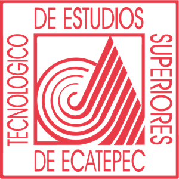
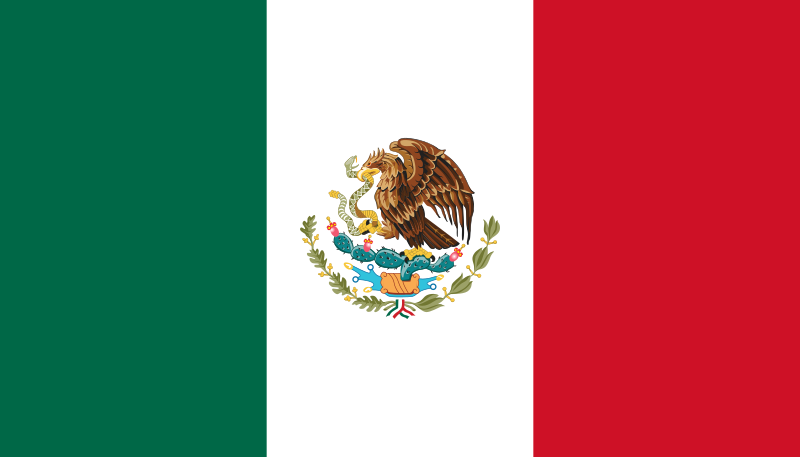
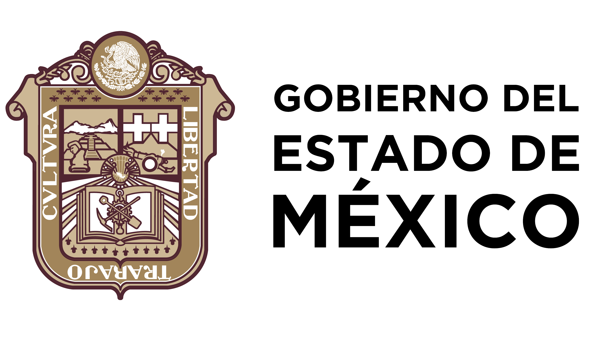
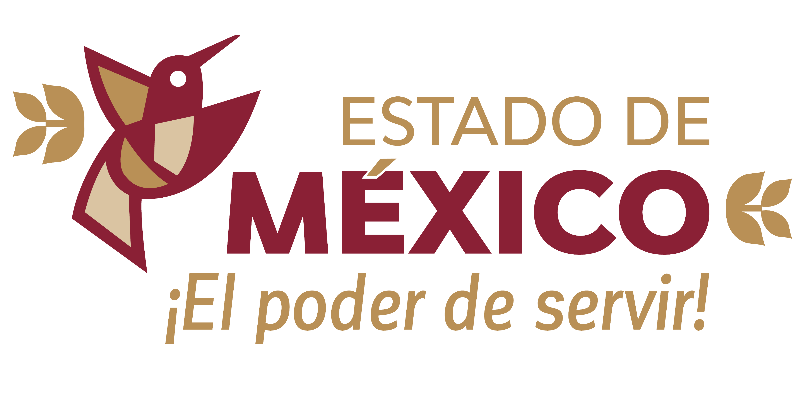

|  | TECNOLÓGICO DE ESTUDIOS SUPERIORES DE ECATEPEC |
|---|
|  | Bienvenidos, Ecatepec De Morelos, Estado De México. |
|
La importancia de las Actividades Culturales y Eventos, dentro del TESE, radica en que su práctica refuerza la formación académica y complementa el desarrollo físico y mental del educando. Además, tienden un puente de vinculación entre el individuo y su entorno social, formando células en las que vive y se hace propia la identidad cultural.
La creación de este software surge de la necesidad de llevar un control adecuado y responsable que facilite a los solicitantes Internos como Externos un medio digital en el que puedan solicitar un espacio para realizar un evento en el Tecnológico de Estudios Superiores de Ecatepec dentro del Departamento de Vinculación y Extensión, desde cualquier lugar.
El personal administrativo tendrá acceso rápido a las solicitudes y será más sencilla su revisión, podrán realizar una actualización instantánea de información sobre los eventos solicitantes que sean aceptados, así como la clasificación, tipo, concepto, horario y fecha de dicho evento.
El sistema de registro y control de asistencia mediante este software facilita la gestión de eventos. Esto ayuda a planificar mejor, asegurando que los recursos estén disponibles de manera adecuada y que se tomen las precauciones necesarias.
El compromiso que tenemos como creadores de este software es contribuir una imagen positiva a la escuela, mejorar la eficiencia operativa, fortalecer la conexión entre el personal Administrativo, educadores, educandos y el entorno social, y contribuir así al ambiente educativo positivo y al éxito general de la Institución.
|  |  |